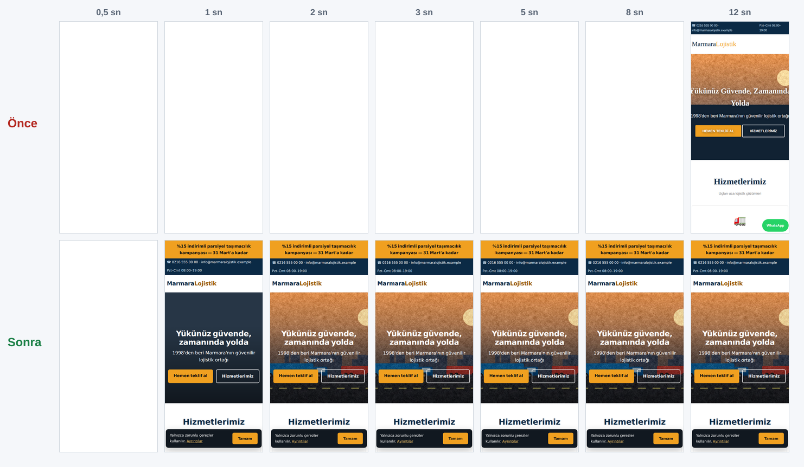

ÖNCE 22 Performans
89 Erişilebilirlik
96 En iyi uyg.
91 SEO
SONRA 100 Performans
100 Erişilebilirlik
100 En iyi uyg.
100 SEO
Sayfa ağırlığı 115 KB
3,6 MB −%97 Yükleme film şeridi · yavaş 4G (1,6 Mbps / 150 ms RTT) + 4× CPU 
Yük testi (25 eşzamanlı) Önce Sonra Sayfa / sn 220.1 2217.5 p95 süre 156 ms 24 ms Ziyaret başına 3719 KB 111 KB 100 bin ziyaret 354.6 GB 10.6 GB
Görseller Eski JPEG AVIF 800 depo-raf 310 KB 35 KB ekip 297 KB 38 KB hero-otoyol 295 KB 37 KB liman-konteyner 319 KB 36 KB Toplam 1222 KB 146 KB
Yapılanlar Slider kaldırıldı; hero <picture> + AVIF/WebP, preload 1,2 MB bloklayan CSS/JS → 5 KB satır içi kritik CSS, 0,5 KB defer JS TTF → woff2 (latin-ext), font-display: swap Çerez/kampanya bandı için yer ayrıldı (CLS 0) Brotli, 1 yıllık önbellek, güvenlik başlıkları Meta açıklama, canonical, JSON-LD, sitemap Performans bütçesi CI kontrolü
"Önce" sürümü, tipik bir 2018 WordPress kurumsal temasının yeniden üretimidir (aynı içerik). Tüm sayılar bu depodaki betiklerle ölçülmüştür: npm run audit · npm run load · npm run filmstrip.